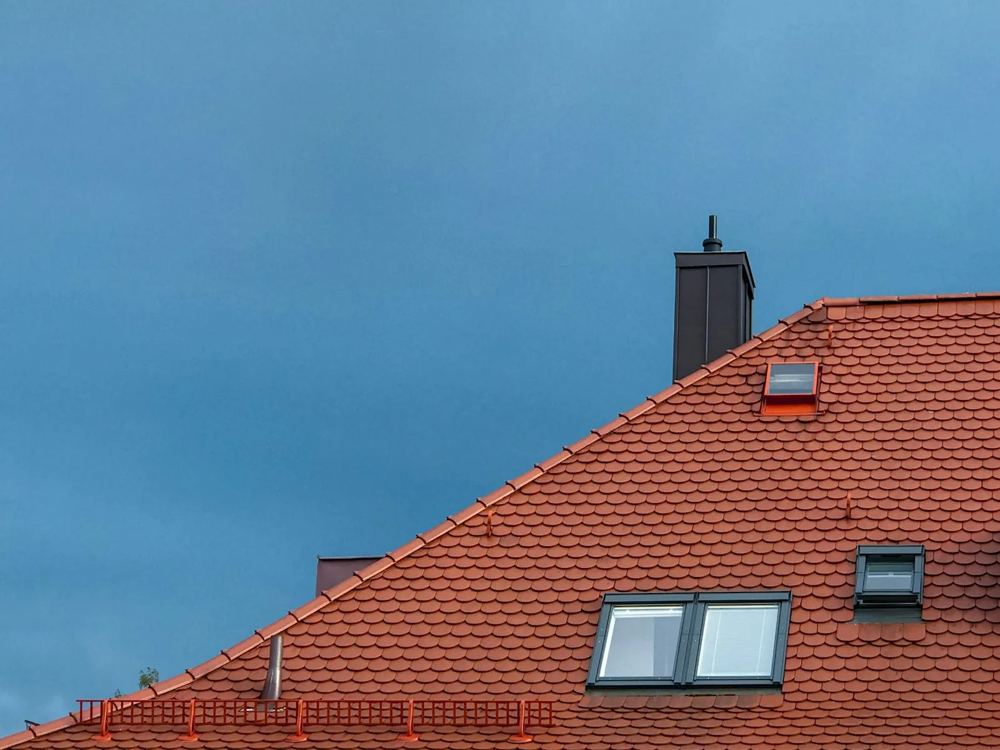
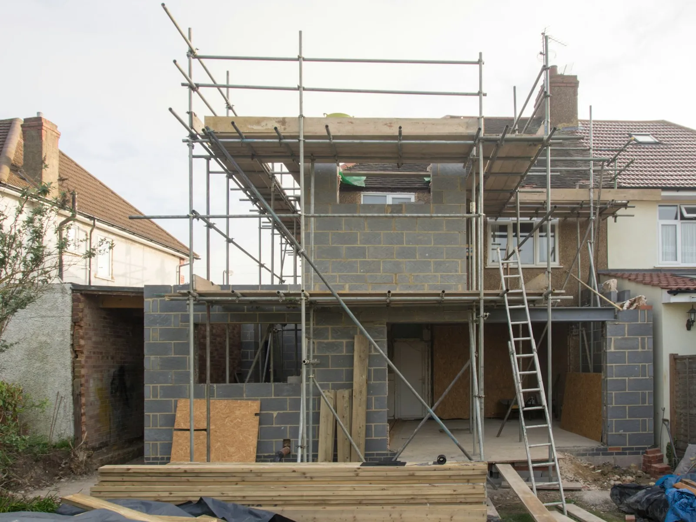
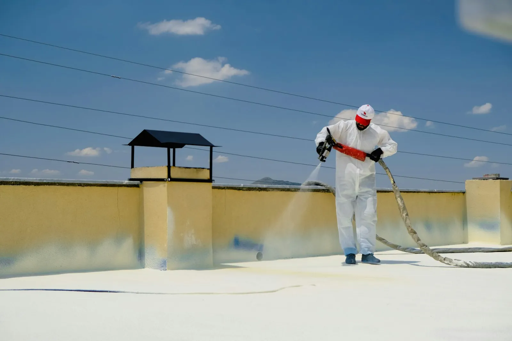
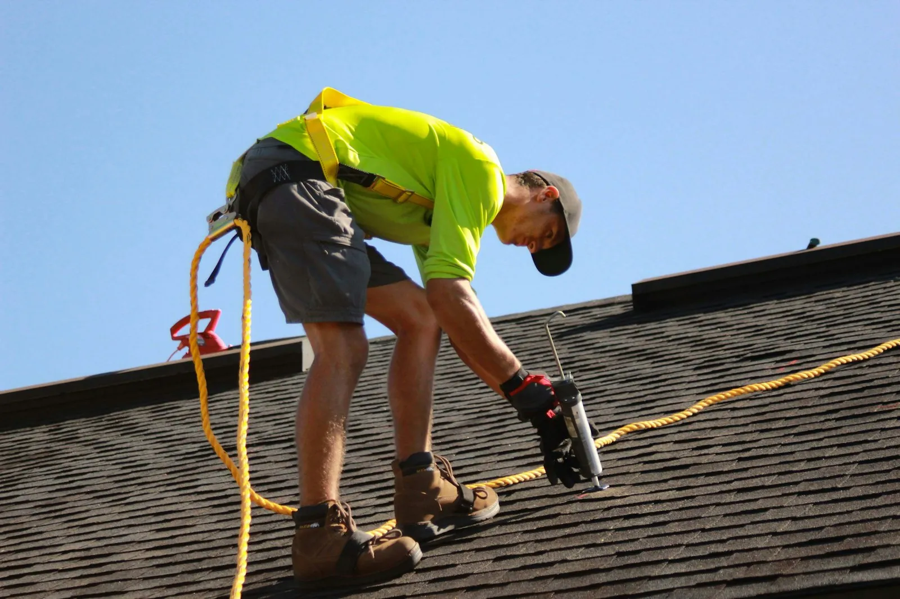

Hellende daken
Nieuw dak of renovatie, met pannen of leien, onderdak en isolatie.
Van een nieuw dak tot een verbouwing. Dak & Bouw Lorand werkt met zorg, spreekt duidelijke afspraken af en is dag en nacht bereikbaar als het dringend is.

5,0

Kies of het om je dak gaat of om bouwwerk. Veel klussen raken aan elkaar, en dan is het handig dat één ploeg het allemaal kan.
Nieuw dak of renovatie, met pannen of leien, onderdak en isolatie.

Een nieuwe dakbedekking of het herstellen van een lek.

Dakgoten, losse pannen, aansluitingen en stormschade.
Een woning aanpassen of uitbreiden, met degelijk ruwbouwwerk.
Muren en ruimtes netjes afgewerkt, klaar om in te wonen.

Een nieuwe dakverdieping of uitbouw met dak, in één planning.
Je vertelt wat je wil. Een foto via WhatsApp helpt al veel.
We komen kijken, meten op en bespreken de mogelijkheden.
Een duidelijke prijs, zonder verrassingen achteraf.
Op de afgesproken data, met een propere werf.

sinds2024Dak & Bouw Lorand werd in 2024 opgericht in Lokeren door Csaba Lorand Lako. Een jonge zaak die elk project, groot of klein, met dezelfde zorg afwerkt.
Je weet vooraf waar je aan toe bent, er wordt gedaan wat afgesproken is, en je kan altijd iemand bereiken.
Je bericht opent in WhatsApp, dan kan je er meteen foto's bij zetten.
Nu bereikbaar
Ja, voor dringende zaken zoals een lek na een storm. Voor een offerte bel je best overdag.
Dat kan. Een uitbouw of dakverdieping met een nieuw dak wordt dan in één planning uitgevoerd.
Na het plaatsbezoek krijg je een offerte. Pas als je akkoord bent, wordt het werk ingepland.
Vanuit Lokeren, ook in de gemeenten errond. Vraag het gerust even.
Ik maakte deze demo voor jullie om te tonen wat er kan. Na een kort gesprek maak ik er iets veel persoonlijkers van, helemaal naar jullie wens.
Vrijblijvend. Ik kom langs of we bellen.
Op maat, op jullie eigen domein.
Geen voorschot. Jullie betalen pas als alles klaar is.
Hosting, domeinnaam en kleine wijzigingen, zoals nieuwe openingsuren.
Omdat een voorbeeld meer zegt dan een mail. Zo zien jullie meteen wat er kan, en het kost jullie niets.
Nee. Het gesprek is vrijblijvend. Vinden jullie het niks, dan is het daarmee gedaan.
Na ons gesprek staat jullie site binnen 10 tot 14 dagen online.
Zeker. Jullie domeinnaam kan gewoon blijven, de nieuwe site komt in de plaats van de oude.
Nee, dat doe ik op basis van ons gesprek. Eigen foto's zijn mooi meegenomen, maar niet nodig om te starten.